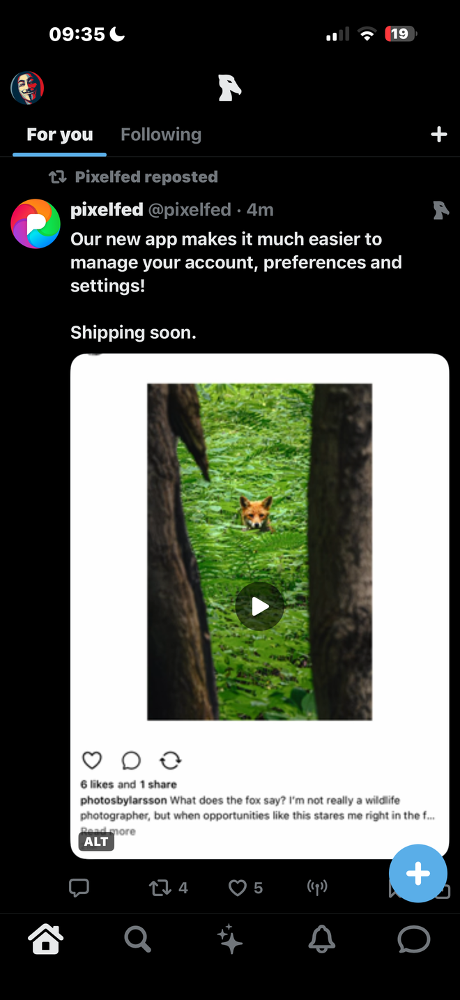

For iPhone
Shoebill pulls the best of the open social web, ranks it on your phone, and shows it as one feed. Open it and you are already scrolling.
Join the betaFree, on TestFlight. Reading never asks you to sign in.

What you get
Signing in is for posting, replying, liking and following, using an account you already have somewhere else. Reading needs nothing.
Install it and the feed loads. There is no Shoebill account to create, and nothing to fill in first.
Posts earn their place on what the networks actually did with them: replies, reposts, and how many independent servers surfaced the same post.
Mastodon, Bluesky, Hacker News, Lemmy and Lobsters, merged into a single timeline and labelled with where each post came from.
Flagged posts are dropped before they reach you. Block an account, block a whole server, mute a word — all of it works signed out.
No analytics, no advertising identifier, no tracking. There is no Shoebill server for any of it to go to.
The feed
Chronological timelines from the open web are mostly sludge, and every client that shows you one asks you to fix that yourself. Shoebill ranks instead: a post that surfaced independently on eleven servers is treated differently from one that surfaced on a single server.

Threads and replies
Tap a post and the replies come with it, pulled from the server the post lives on. Reply, like or repost from the same screen once you have connected an account.

Reach
Shoebill reads Mastodon, Bluesky, Hacker News, Lemmy and Lobsters through their own documented public APIs, plus posts that Threads, Pixelfed and Flipboard accounts share to the fediverse. Every post is labelled with the network it came from.

How it works
Most apps built on the open web put a setup screen where the content should be. This one does not.
Install from TestFlight and launch it. No email, no password, no server to choose.
The feed is already there. It is assembled and ranked on your phone every time you refresh.
Connect a Mastodon or Bluesky account when you want to post, reply, like or follow. That is the only thing it unlocks.
The short version
networks read directly through their own public APIs: Mastodon, Bluesky, Hacker News, Lemmy and Lobsters.
Your phone talks to those APIs itself. Nothing is proxied through us, because there is no us in the middle.
Reading requires no sign-in at all. There is no Shoebill account, so we hold no user record.
No analytics, no advertising identifier, no tracking. What you read stays on the handset.
Questions
Yes. Shoebill is free, has no ads, and has no in-app purchases. It is in open beta on TestFlight now.
Not to read. The whole feed, threads, profiles, search and video work with no sign-in.
You sign in only to post, reply, like, repost or follow, and you sign in with your own Mastodon or Bluesky account. There is no Shoebill account to make.
Mastodon, Bluesky, Hacker News, Lemmy and Lobsters, through each network's own documented public API. You also see posts that Threads, Pixelfed and Flipboard accounts share to the fediverse.
Shoebill is not affiliated with any of them, and every post is labelled with where it came from.
Posts carrying an adult, violent or self-harm label from the networks' own labelling services are dropped from the feed rather than blurred, and pictures are checked on the device before they are shown.
You can block an account, block an entire server, and mute words, all of which work while signed out. Every post and account has a Report action, and reports are answered within 24 hours.
No. There is no analytics SDK, no advertising identifier and no tracking of any kind, and there is no Shoebill server for data to be sent to.
Your settings, blocks, saved posts and what the ranker has learned are stored on the phone and are deleted with the app. The full detail is on the privacy page.
iPhone running iOS 17 or later. It is iPhone-only for now.